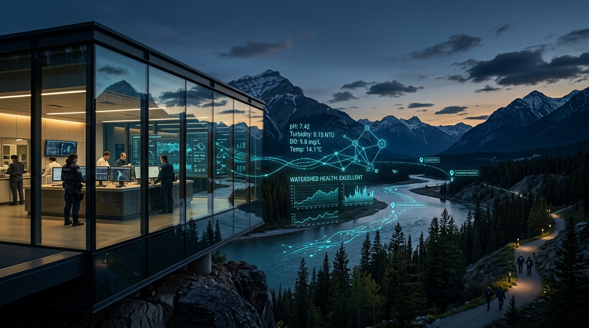

Empowering Communities with Pure, Transparent Water Intelligence.
Real-time chemical telemetry, autonomous river monitoring nodes, and immediate citizen incident reporting across all 8 municipal watershed basins.

Regional Water Quality Index (WQI)
Standard Composite Index governed under Municipal Protocol 4.2 • Safe limit: > 80
Indicates balanced acidity. Prevents pipe corrosion and preserves biological stability in all civic distribution reservoirs.
Measure of water clarity. Low suspended particulate ensures ultraviolet disinfectant penetration remains completely effective.
High oxygen indicates vigorous river turnover and minimal organic decay, sustaining the natural river basin ecosystem.
Heavy metal sensor sweeps in primary mains register well below federal action limits, verifying municipal pipe anti-corrosion lining.
Interactive Watershed & Sensor Grid
Real-time GIS telemetry overlay across Municipal Basin 08. Select node pins for telemetry drilldown.
Civic Incident Live Feed
Verified resident reports, utility field-dispatch updates, and real-time community water alerts.
Water Safety & Community Guides
Civic empowerment tools and emergency readiness protocols published by the Municipal Water Board.
DIY Home Water Testing
Step-by-step guidance on collecting tap specimens using municipal colorimetric test strips. Free test packets are delivered straight to your door or civic centers.
Boil Water Notice Protocol
Essential procedures during severe storm events or main pressure drops. Learn correct rolling-boil runtimes (minimum 60 seconds) with our interactive timer.
Tap Safety Assessment Quiz
Take a 2-minute diagnostic assessment based on your home construction year, pipe composition, and neighborhood municipal trunk line to gauge risk levels.